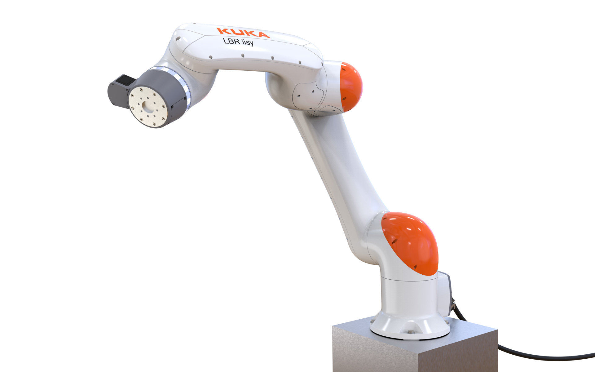
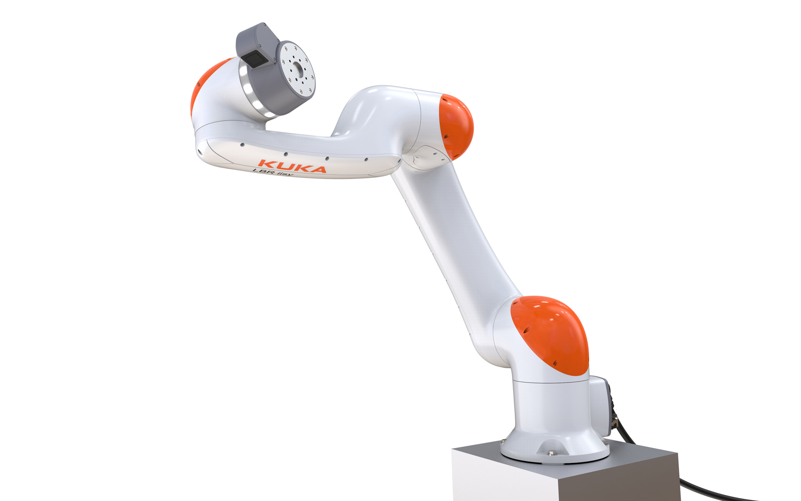
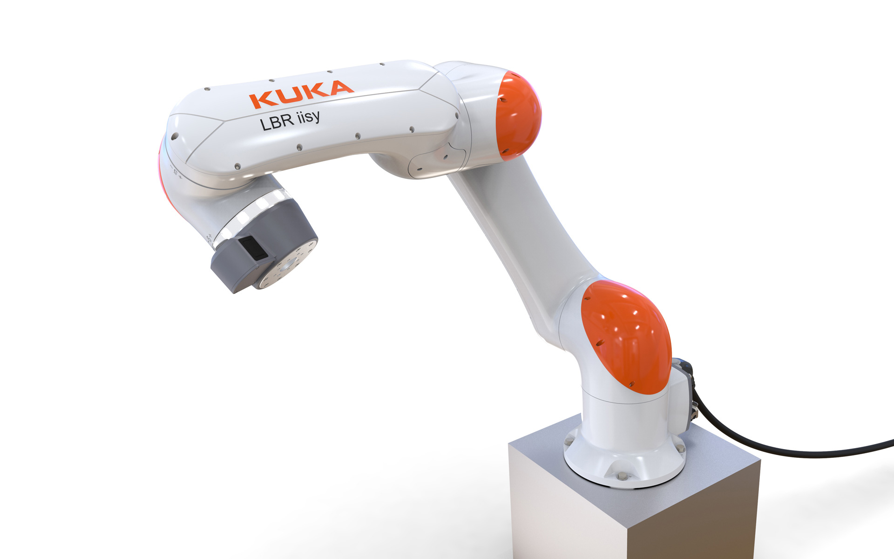

KUKA LBR iisy 11
Small Robot
KUKA LBR iisy 11
Kleinrobotik
The LBR iisy 11 is a sensitive, precise and easy-to-use robot that makes automation even more intuitive and opens up new areas of human-robot collaboration.
It has high-quality joint torque sensors in all 6 axes, which react to the slightest external forces and
offer certified collision protection. Its 11 kg payload and the 1300mm reach are optimized for activities
in
narrow spaces, whether loading, unloading, packaging, reliable assembly or difficult tasks in Research +
Development.
The LBR iisy 11 is ready for operation immediately, can be quickly and easily reprogrammed for a new
task.
Its intuitive, easy to learn programming of movement sequences is done by manually guiding the robot at
its ergonomically integrated commander. In the case of unplanned interruptions, it remembers every
movement that has taken place and can immediately resume work without re-learning. Its supple, organic
design prevents bruising and offers maximum protection.
The high technical quality standard, the cobot appearance, the ease of use and the effort in the user
protection systems set new standards. They represent the high standards and company philosophy of the
KUKA
brand.
Der LBR iisy ist ein sensitiver, präziser und leicht bedienbarer Roboter, der die Automatisierung noch intuitiver gestaltet und neue Bereiche der Mensch-Roboter-Kollaboration erschließt.
Er besitzt in allen 6 Achsen hochwertige Gelenkmomentensensoren, die auf geringste Kräfte von außen
reagieren und zertifizierten Kollisionsschutz bieten. Mit einer 11 kg-Traglast und einer 1300mm-Reichweite
ist er auf Tätigkeiten in engen Räumen optimiert, ob Bestücken, Entnehmen, Verpacken, zuverlässiges
Montieren oder diffizile Arbeiten in der Forschung.
Er ist sofort einsatzbereit, kann schnell und einfach für eine neue Aufgabe umprogrammiert werden. Seine
Intuitive Programmierung von Bewegungsabläufen erfolgt durch manuelles Führen des Roboters an seinem
ergonomisch integrierten Commander. Bei ungeplanten Unterbrechungen merkt er sich jede ausgeführte
Bewegung und kann ohne erneutes Anlernen sofort die Arbeit wieder aufnehmen.
Sein geschmeidiges, organisches Design vermeidet Quetschungsgefahren und ist auf maximalen Schutz
abgestimmt. Der hochwertige technische Qualitätsstandard, das Cobot-Erscheinungsbild, die leichte
Anwendbarkeit und der Aufwand in den Anwenderschutzsystemen setzen neue Maßstäbe. Sie stehen für die
hohen
Ansprüche und Firmenphilosophie der Marke KUKA.



Images © Selić Industriedesign